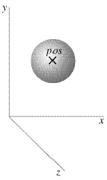

sphere |

 Here is an example of how to make a sphere:
ball = sphere(pos=vector(1,2,1),
radius=0.5)
This produces a sphere centered at location (1,2,1) with radius = 0.5, with the current foreground color.
The sphere object has the following attributes and default values, similar to cylinder: pos vector(0,0,0), axis vector(1,0,0), color vector(1,1,1) which is color.white, red (1), green (1), blue (1), opacity (1), shininess (0.6), emissive (False), texture, and up vector(0,1,0). As with cylinders, up and axis attributes affect the orientation of the sphere but have only a subtle effect on appearance unless a non-smooth texture is specified or the cross section is oval. The magnitude of the axis attribute is irrelevant. Additional sphere attributes:
radius The radius of the sphere, default = 1
size Default is vector(2,2,2). Instead of specifying the radius, you can set size=vector(length,height,width), which means that the cross section of the sphere can be elliptical, making it like the ellipsoid object. Unlike other objects, changing size doesn't change axis, changing axis doesn't change size.
canvas By default, an object such as a sphere will be displayed in the most recently created 3D canvas, which will be the default canvas named "scene" unless you create a canvas yourself (see the related discussion at the start of the canvas documentation).
Note that the pos attribute for cylinder, arrow, cone, and pyramid corresponds to one end of the object, whereas for a sphere it corresponds to the center of the object.
If you include make_trail=True when you create the object, a trail will be left behind the object as you move it. For related options, see Leaving a Trail.
A fast sphere object: simple_sphere
In order to look smooth, a sphere is made of a very large number of triangles. Sometimes speed is more important than ultimate beauty. The simple_sphere object can be used just like a sphere, but a large number of simple_sphere objects is displayed very much faster than the same number of regular spheres. For speed, the simple_sphere object is used in the points object and in trails that use points.
See Rotating an Object for an easy way to change the orientation of an object.
See description of Additional Attributes available for all 3D display objects.